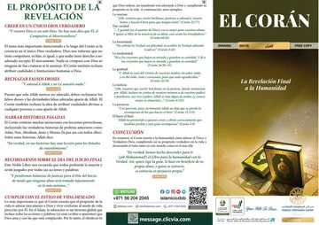

¿Cuál es el propósito de la vida?
Folleto de 6 páginas publicado por el Islamic Information Center (Dubái).
¿De dónde provengo? ¿Porque estoy en esta vida? ¿Hacia dónde voy después de la muerte?
Una de las primeras preguntas que llaman a la puerta de la mente cuando consideramos nuestro propósito en la vida es: "¿de dónde venimos?" ¿Estamos aquí por coincidencias naturales aleatorias? ¿O por acción de un Sabio Creador? Ciertamente el reconocer la existencia de un creador es el primer paso para entender nuestro verdadero propósito en la vida. Hay muchas razones lógicas y racionales para creer en la existencia de un creador. A continuación, se mencionan brevemente tres razones. 1. EL COMIENZO DEL UNIVERSO La primera evidencia que apunta a la existencia de Dios (El Creador) se relaciona con entender el origen del universo. Imagina que caminas por un desierto y encuentras un reloj. Sabemos que un reloj está hecho de vidrio, plástico y metal. El vidrio proviene de la arena, el plástico del petróleo y el metal se extrae del interior de la tierra; y todos estos componentes se encuentran en el desierto. ¿Creerías que el reloj se formó solo? ¿Que el sol brilló, el viento sopló, cayó un rayo, el petróleo emergió y se mezcló con la arena y el metal, y que durante millones de años el reloj se formó por casualidad o coincidencias naturales? La experiencia humana y la simple lógica nos dicen que algo que tiene un comienzo no surge simplemente de la nada, ni puede crearse a sí mismo. Por lo tanto, la explicación más racional es que Un Creador Superior creó el universo. Y este Creador obligatoriamente debe ser Poderoso y Conocedor, ya que trajo a la existencia todo el universo y creó las “leyes de la ciencia” que lo rigen. También podemos llegar a la creencia de que a este Creador no se le aplican las leyes del espacio / tiempo, ya que el tiempo y el espacio comenzaron con la creación del universo. Y todos estos atributos conforman el concepto básico de Dios, El Creador del universo. Y esto está en un perfecto acuerdo con la ciencia moderna, que concluye que el universo es finito y tiene un comienzo. Algunos pueden preguntar: “¿Quién creó a Dios?”. La respuesta es que Dios, el Creador, es diferente a Su creación. El concepto de Dios es que es Eterno, siempre ha existido y no tiene principio; por lo tanto, la pregunta de quién creó a Dios es irracional. ¿CUÁL ES EL PROPÓSITO DE LA VIDA?
2. LA PERFECCIÓN DEL UNIVERSO La segunda evidencia que apunta a la existencia de un Inteligente Creador es el orden y el equilibrio perfecto de nuestro complejo universo. Muchas características del universo indican que de manera clara que fue diseñado especialmente para sostener vida, como la distancia entre la tierra y el sol, el grosor de la corteza terrestre, la velocidad de rotación de la Tierra, el porcentaje de oxígeno en la atmósfera e incluso la inclinación del eje terrestre. Si estas medidas fueran ligeramente diferentes a lo que son, la vida no podría existir. Así como un reloj necesita un fabricante inteligente para medir el tiempo con precisión, de la misma manera la Tierra debe tener un Creador Inteligente para mantener su órbita exacta alrededor del Sol. ¿Podría esto ocurrir por su propia cuenta? Cuando vemos el orden, las leyes precisas y los sistemas dentro de nosotros mismos y en el resto del universo, ¿Acaso no es racional pensar que tienen un organizador? Y la mejor explicación para este organizador, es la existencia de Un Único Dios, aquel que creo este sistema. 3. LA REVELACIÓN DE DIOS La tercera evidencia que apunta a la existencia de Dios es la revelación real que Dios ha enviado a la humanidad como una señal de Su existencia. Hay señales claras de que el libro del Islam, el Corán, es la palabra de Dios. A continuación, un breve resumen de las razones que apoyan esta afirmación. • El Corán descendió hace más de 1400 años y aun así contiene muchos hechos científicos que eran desconocidos para la gente de esa época y que solo han sido descubiertos recientemente por la ciencia. • Ejemplos incluyen: el agua como origen de toda la vida (Corán 21:30); el universo en expansión (Corán 51:47); y las órbitas individuales del Sol y la Luna (Corán 21:33). • También contiene muchos hechos históricos que eran desconocidos para la gente de la época, así como numerosas profecías que se han demostrado correctas. • Está libre de cualquier error o contradicción, a pesar de haber sido revelado gradualmente durante 23 años y de tratar una amplia variedad de temas. • Ha sido preservado palabra por palabra desde su revelación en su idioma original, el árabe, a diferencia de otras escrituras que dejaron de existir en su forma original. Si Dios reveló un libro como guía para las personas, dicho libro debe contener pruebas claras de la existencia de Dios.
• Tiene un mensaje simple, puro y universal que apela al intelecto humano y a las creencias connaturales sobre Dios Purificado y Elevado sea. • El Corán tiene un efecto profundo y conmovedor en las personas al que no se inmuta sino quien haya saboreado con el corazón su dulzura. • Fue revelado sobre el Profeta Muhammad (la paz y las bendiciones sean con él), quien era conocido por no saber leer ni escribir, pero contiene un estilo único de lenguaje reconocido universalmente como la cumbre de la elocuencia y la belleza lingüística árabe. La explicación más racional para los muchos aspectos únicos y milagrosos del Corán es que proviene de Dios. DIOS ENVIA LA GUIA Con el simple hecho de reconocer que hemos sido creados por el Creador Sabio y Todopoderoso, es de esperar que nos informe del propósito de nuestra creación. ¿Cómo podemos saber lo que Dios espera de nosotros? ¿Vivimos en la vida de la prueba y el error o vivimos para alcanzar nuestro propio propósito? ¿O “seguimos la corriente” siguiendo los pasos de otros? Efectivamente no, ciertamente Dios envió profetas e hizo descender revelaciones para aclararnos nuestro propósito. Dios envió miles de profetas, y envió por lo menos a uno para cada nación, con el mismo mensaje: adorar solo a Dios y seguir Su guía. Entre ellos estaban Adán, Noé, Abraham, Moisés, Jesús y Muhammad (la paz sea con todos ellos). El Profeta Muhammad (la paz sea con él), es el último en la cadena de profetas, fue el ejemplo perfecto de un ser humano honesto, justo, compasivo y valiente. Fue enviado con la revelación final de Dios, el Corán, para aclarar a las personas aquello que fue descendido (el Corán). El Corán es un libro de guía que explica muchos conceptos que conciernen a la mayoría de las personas, como el propósito de nuestra existencia, quién es Dios, las acciones que agradan a Dios y con las que se complace y aquellas que Le desagradan, las historias de los profetas anteriores y las lecciones que sacamos de dichas historias, y los detalles del Paraíso, el Infierno y el Día del Juicio. También busca aclarar los males entendidos sobre la naturaleza de Dios, como la verdadera posición del Mesías en comparación con Dios. Se dieron a manos del Mesías, como de todos los profetas, milagros, y llamo a las personas hacia la adoración de Dios únicamente
LA NATURALEZA DE JESUS Algunos cristianos afirman que “Jesús es Dios” o que es parte de una trinidad; es decir, que es la encarnación de Dios en la tierra y que él es Dios en forma humana. Sin embargo, según la Biblia, Jesús nació, comió, durmió, oró y no tenía un conocimiento que comprende todas las cosas, y todas estas son cualidades impropias de Dios. Dios posee los atributos de la perfección, mientras que el ser humano es todo lo contrario. Entonces, ¿Cómo puede algo ser dos opuestos completos al mismo tiempo? Eso es algo que no es racional. Sin embargo, algunos pueden llegar a preguntar: “Si Dios puede hacer cualquier cosa, ¿por qué no puede convertirse en hombre?” Por definición, el Dios no realiza actos que sean contrarios a Su divinidad. Por lo tanto, si Dios se convirtiera en un hombre y adquiriera atributos humanos, dejaría de ser, por necesidad, un Dios. Además de eso, la Biblia contiene muchos pasajes en los que Jesús habla y actúa como si fuera un siervo de Dios, y como si Dios fuera un Ser distinto a él. Por ejemplo, Jesús “cayó sobre su rostro y oró” [Mateo 26:39]. Si Jesús fuera Dios, ¿acaso un Dios caería sobre su rostro y oraría? ¿Y hacia quién estaría orando en ese caso? La mayoría de los cristianos afirman que “Jesús es el Hijo de Dios”. Y debemos preguntarnos a nosotros mismos: ¿qué es lo que esto significa realmente? Ciertamente Dios está muy por encima de tener un hijo físico y literal. Más bien, encontramos que el término “Hijo de Dios” se usa simbólicamente en los idiomas bíblicos más antiguos para referirse a un “siervo justo”. Y se utiliza en varios pasajes del Antiguo Testamento para referirse a varios hombres piadosos como David, Salomón e Israel, y no exclusivamente para Jesús. Un ejemplo es: “Israel es mi hijo primogénito” (Éxodo 4:22). La creencia islámica acerca de Jesús explica quién fue realmente, manteniendo al mismo tiempo la creencia pura sobre Dios y Su Absoluta Grandeza, Unicidad y Perfección. Jesús que la paz sea con el, fue un profeta honorable, enviado por Dios para llamar a la adoración de Dios únicamente. Al intentar entender el concepto de Dios en el Islam, es importante abordar la naturaleza del Mesías, dada la confusión y las afirmaciones generalizadas sobre su naturaleza. “No es apropiado que Allah tome un hijo; ¡Él es perfecto y sin defecto!”
ENTONCES... ¿POR QUÉ ESTOY AQUÍ? Todos reconocemos que las partes de nuestro cuerpo, como los ojos, los oídos, el cerebro y el corazón, tienen un propósito. ¿No tendría entonces sentido que el individuo, en su totalidad, también tenga un propósito? Dios, el Todo Sabio y Todopoderoso, no nos creó simplemente para vagar sin rumbo o para satisfacer nuestros instintos y deseos básicos como el comer, el beber y el reproducirnos. Más bien, tenemos un propósito más significativo y elevado: el de reconocer la existencia de Allah y adorarle únicamente a Él, de modo que vivamos conforme a la guía de nuestro Creador. Y esta guía nos permite vivir una vida exitosa y bendecida en todos los aspectos. Y dicha guía incluye actos de adoración, como confiar en Dios, la oración y el ayunar, así como acciones beneficiosas para la sociedad, como ser buenos con los vecinos, apoyar a la familia, ser honestos y cuidar de los animales. Dios nos prohíbe adorar a cualquier otra cosa (por ejemplo, estatuas, el sol, la luna, santos, sacerdotes o incluso profetas). Ya que ciertamente Él no necesita de socios ni intermediarios. Cualquiera persona puede adorar directamente a Dios en todo momento. Dios describe esta vida como una prueba, y las personas son probadas de diferentes maneras. Nosotros no podemos controlar lo que nos sucede, pero sí podemos controlar nuestras reacciones. Y entre los medios a través de los cuales nos acercamos a Dios y a través de los cuales podemos alcanzar el Paraíso están la paciencia ante las adversidades y la gratitud ante las bendiciones. Dios también nos advierte de un terrible castigo en el Infierno si elegimos la incredulidad e ignoramos Sus mandatos. ENTONCES... ¿QUÉ DEBO HACER AHORA? La prueba de la fe de una persona consiste en usar su intelecto para contemplar y reconocer las señales de la existencia de Dios, y vivir acorde a Sus Mandamientos y Prohibiciones. Esto se logra sometiéndose a los mandatos de Dios, lo que en árabe significa convertirse en un “musulmán”. Dios ha hecho que el Islam sea accesible para todos, sin importar su historia, creencia anterior o situación actual. Por lo tanto, cualquiera puede convertirse en musulmán simplemente creyendo en lo que indica, y pronunciando el siguiente testimonio de fe: “Atestiguo que no hay ningún dios merecedor de ser adorado excepto Allah, y atestiguo que Muhammad es el Mensajero de Allah.” ¿Acaso no ha llegado el momento de que cumplas con el propósito por el cual fuiste creado, y te sometas a la realidad y reconozcas la existencia de tu Creador?
Islamic Information Center (Dubai) · www.islamicic.com


Folletos para imprimir
 Sonrisa y compasión
Sonrisa y compasiónEspañol
 La mujer en el Islam
La mujer en el IslamEspañol
 La alta moralidad
La alta moralidadEspañol
 Introducción al Islam: un estilo de vida práctico y equilibrado
Introducción al Islam: un estilo de vida práctico y equilibradoEspañol
 El Profeta Muhammad: ¡debes conocer a este hombre!
El Profeta Muhammad: ¡debes conocer a este hombre!Español
 Jesús: un profeta de Dios
Jesús: un profeta de DiosEspañol
 El concepto de la Divinidad en el Islam
El concepto de la Divinidad en el IslamEspañol

El Corán: la revelación final a la humanidadEspañol
 Conceptos erróneos sobre el Islam
Conceptos erróneos sobre el IslamEspañol
 Los derechos de las mujeres en el Islam
Los derechos de las mujeres en el IslamEspañol
 Los milagros científicos del Corán
Los milagros científicos del CoránEspañol
 La muerte y el más allá
La muerte y el más alláEspañol